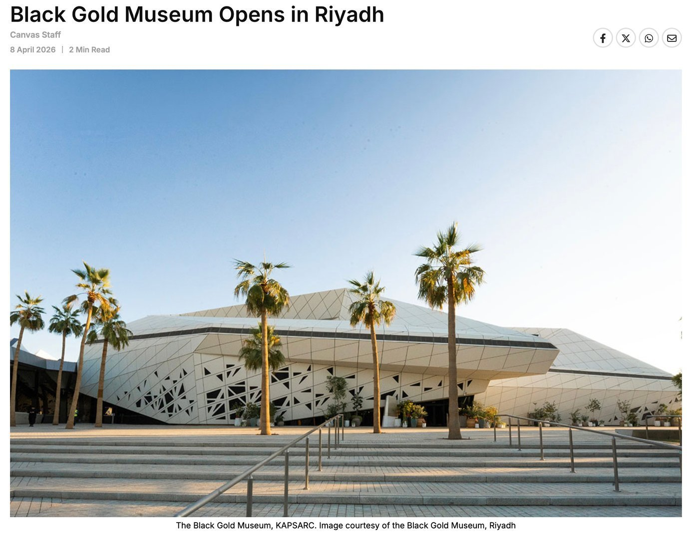
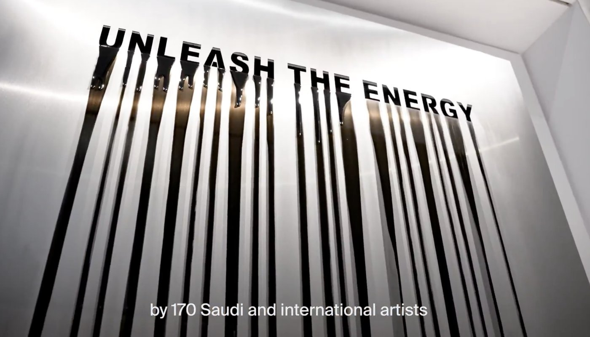
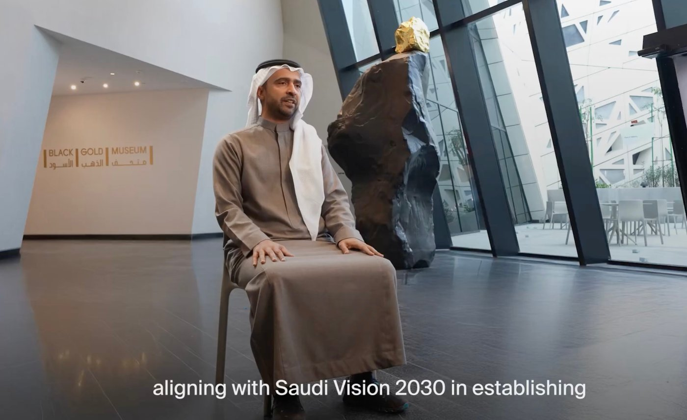
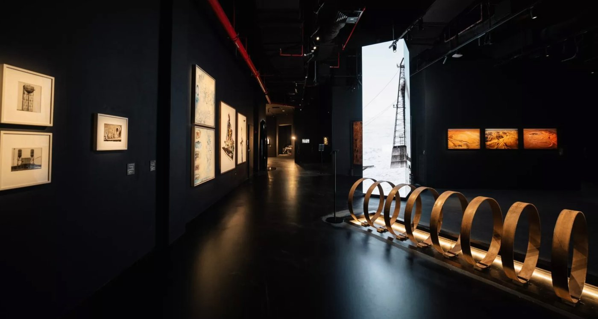
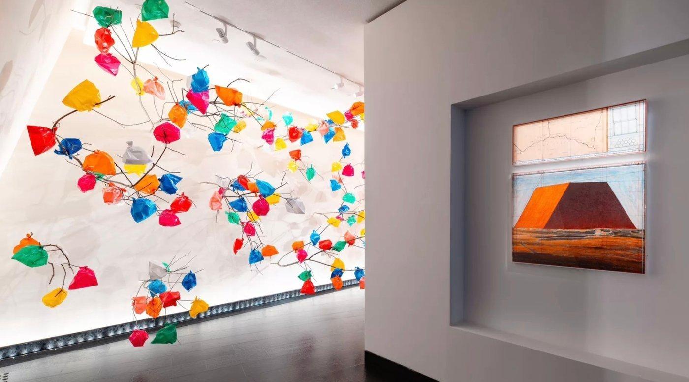

사우디아라비아 리야드에 최근 개관한 블랙 골드 박물관(Black Gold Museum)은 석유의 역사와 그 사회적인 영향을 현대미술을 통해 조명하는 문화 공간이다. 이번 전시에서는 일명 '블랙 골드(Black Gold)'로 불리는 석유를 단순한 산업 자원이 아닌 하나의 서사로 풀어냈다.

▲ 블랙 골드 박물관 외관 — 출처: 칸바스(Canvas)
이 박물관은 리야드의 킹 압둘라 석유연구센터(King Abdullah Petroleum Studies and Research Center, KAPSARC) 내에 위치한다. 건물은 자하 하디드(Zaha Hadid) 건축가가 설계한 복합 단지의 일부로, 과거 연구 도서관으로 사용되던 공간을 전시 공간으로 전환해 조성됐다. 산업 연구 중심의 시설이 문화 공간으로 바뀌었다는 점은, 사우디가 기존 산업 기반을 문화 자산으로 확장하고 있음을 보여준다.
블랙 골드 박물관(Black Gold Museum)은 약 170명의 작가가 참여하고 350여 점의 작품을 선보이는 전시를 기반으로 운영된다. 사우디를 대표하는 마날 알도와얀(Manal AlDowayan), 무한나드 쇼노(Muhannad Shono), 아흐메드 마테르(Ahmed Mater), 모하메드 알파라즈(Mohammad Alfaraj), 아이만 제다니(Ayman Zedani) 현대미술가 등이 참여했으며, 이들은 회화와 설치, 영상 등 다양한 매체를 통해 석유가 인류 사회에 미친 영향을 다각도로 다룬다. 전시는 '만남(Encounter)', '꿈(Dreams)', '의문(Doubts)', '미래(Future)'의 네 개 구역으로 구성되며, 이를 통해 석유의 발견에서 출발해 산업화와 경제 성장, 그에 따른 사회적인 변화, 그리고 미래에 대한 질문까지 이어지는 흐름을 단계적으로 제시한다. 이를 통해 관람객은 석유를 단순한 자원이 아니라 인간 사회와 긴밀히 연결된 역사적·문화적 요소로 이해하게 된다.


▲ 블랙 골드 박물관 전시장 내부 — 출처: 칸바스(Canvas)
블랙 골드 박물관은 2020년 사우디 문화부와 에너지부가 공동으로 발표한 프로젝트로, 삶의 질 향상 프로그램(Quality of Life Program)과 '전문화 박물관 이니셔티브(Specialized Museums Initiative)'의 일환으로 추진됐다. 이는 특정 주제에 특화된 박물관을 확충해 사우디아라비아의 문화 생태계를 다각화하려는 정책적 흐름과 연결된다. 사우디아라비아는 세계적인 석유 생산국으로, 석유는 국가 경제뿐 아니라 사회 구조와 정체성을 형성해온 핵심 요소다. 이러한 자원을 문화적인 맥락에서 재해석한다는 점은, 산업 중심의 국가 서사를 문화적인 담론으로 확장하려는 시도로 볼 수 있다.


▲ 블랙 골드 박물관에 설치된 작품들 — 출처: 비지트사우디(VisitSaudi)
전시장은 다양한
공간 연출 속에서 영상과 설치 작품을 결합한 구성으로 관람 흐름을 형성한다. 일부 작품은 대형 화면과 소리를 활용해 석유 채굴과 산업화 과정을 시각적으로 제시하고, 오브제(objet)와 문헌(text)을 통해 자원의 의미를 탐색하도록 구성된 점이 특징이다. 또한 석유가 인간의 삶과 사회에 미친 영향을 다양한 관점에서 다루는 작품들도 포함돼, 산업 자원을 다층적으로 이해할 수 있도록 한다.이처럼 최근 사우디 전역에서는 미술관과 전시 공간이 빠르게 늘어나고 있다. 블랙 골드 박물관(Black Gold Museum)은 이러한 변화 속에서 등장한 대표적인 사례다. 석유로 성장한 국가가 이제 그 자원을 '이야기'로 재구성하고 있다는 점에서, 이 미술관은 사우디가 나아가고자 하는 방향을 드러낸다. 산업의 중심에 있던 자원이 문화적 해석의 대상이 되는 이 변화는, 사우디가 글로벌(global) 문화 환경 속에서 새로운 정체성을 구축해가는 과정으로 읽힌다.
특히 블랙 골드 박물관은 석유를 산업적 성과로만 다루지 않고, 그것이 사우디아라비아의 사회적 기억과 정체성 속에서 어떻게 축적되고 이해되어 왔는지를 보여준다. 전시는 석유 산업의 발전 과정과 더불어 그것이 개인의 삶, 노동 구조, 도시 형성에 미친 영향을 함께 다루며 석유의 의미를 확장한다. 이는 석유를 경제적 가치 중심으로만 보던 기존 관점에서 벗어나, 이를 사회적·문화적 경험의 영역으로 다시 바라보게 한다.
사진 출처 및 참고자료
— ≪아트뉴스(ARTnews)≫ (2026. 4. 7). Riyadh's New Black Gold Museum Attempts to Convey 'The Legacy of Oil Through Art'. artnews.com
— ≪칸바스(Canvas)≫ (2026. 4. 8). Black Gold Museum Opens in Riyadh. canvasonline.com
— ≪사우디페디아(Saudipedia)≫ (2025. 10. 11). Black Gold Museum. saudipedia.com
— 비지트사우디(VisitSaudi). visitsaudi.com
— 블랙 골드 박물관 공식 X (@BGM_moc). x.com/BGM_moc